맞추지 않습니다. 터뜨립니다
줄을 맞춰 교환하는 퍼즐이 아닙니다. 같은 병이 두 개 이상 붙은 곳을 탭하면 그 자리가 폭발합니다. 많이 붙어 있을수록 폭발이 커집니다.
그래서 매 판의 질문은 하나입니다. 지금 터뜨릴 것인가, 더 모을 것인가.
크게 터뜨리면 특수병이 남고, 특수병끼리 붙이면 조합이 터집니다.
- 연쇄 폭발
- 대폭발
- 십자 번개
- 굵은 십자
- 삼중 번개
- 번개 폭풍
- 초대형 폭발
조합이 맞으면 판 전체가 날아갑니다.
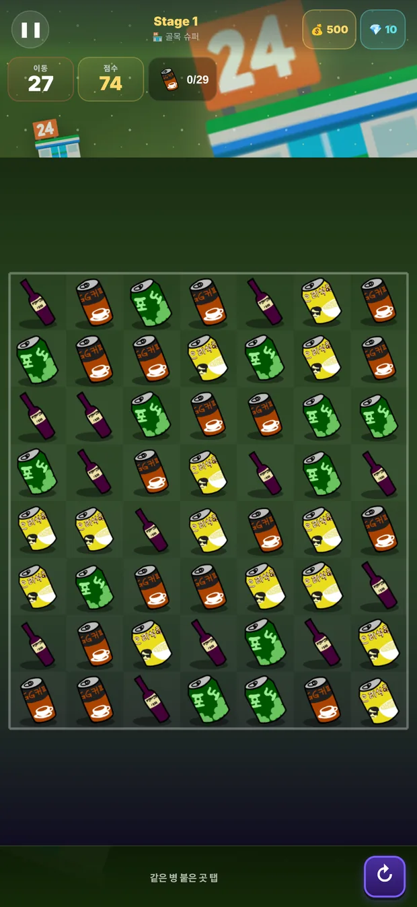
길에 버려진 병 하나로 시작해
부자가 되는 게임.
같은 병이 붙은 곳을 탭하면 터집니다. 터뜨려 모으고, 팔아서 공장을 돌리고, 공장이 번 돈으로 더 좋은 병을 모읍니다.
실제 플레이 · 챕터 1부터 10까지
+ 표시는 계속 늘어나는 것들입니다. 판도, 병도, 라인도 업데이트마다 추가됩니다.
이 게임의 중심
판을 깨면 방금 부순 병 중 하나를 집어 묻습니다. "이건 어떤 밤에 마신 병일까?" 맞히면 보너스, 틀려도 정답과 그 밤의 이야기를 알려줍니다. 5초면 끝나고, 1판부터 나옵니다.
감정 실력이 쌓이면 호칭이 따라옵니다 — 이제 막 코를 대기 시작했다 → 흔한 병은 알아본다 → 냄새만 맡아도 짐작한다 → 사람 밤을 읽어낸다 → 틀리는 법이 없다.
무엇이 다른가
판을 깨면 병이 나오고, 병을 팔면 공장이 돌고, 공장이 번 돈으로 더 좋은 병을 노립니다. 네 가지가 서로를 먹여 살립니다.
줄을 맞춰 교환하는 퍼즐이 아닙니다. 같은 병이 두 개 이상 붙은 곳을 탭하면 그 자리가 폭발합니다. 많이 붙어 있을수록 폭발이 커집니다.
그래서 매 판의 질문은 하나입니다. 지금 터뜨릴 것인가, 더 모을 것인가.
크게 터뜨리면 특수병이 남고, 특수병끼리 붙이면 조합이 터집니다.
조합이 맞으면 판 전체가 날아갑니다.

900판이 같은 모양일 리 없습니다. 30개 챕터에 걸쳐 판 모양이 14가지로 바뀌고, 막아서는 것들이 하나씩 늘어납니다.
목표도 달라집니다. 점수 목표, 복합 목표, 크게 터뜨리기, 총력전.
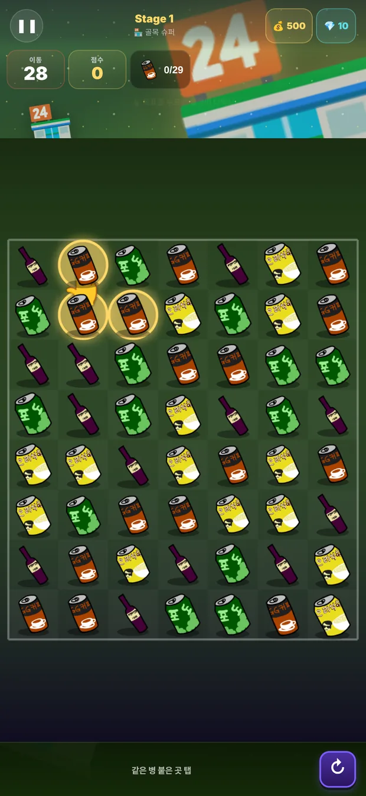
부스터를 아무거나 넣는 게 아닙니다. 같은 계열을 모으면 시너지가 붙습니다.
진도가 나가면 들고 갈 수 있는 칸이 늘어납니다. 어려운 판은 짐을 바꿔 다시 붙는 쪽이 빠릅니다.
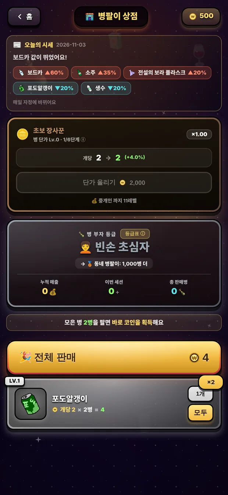
캔커피부터 위스키, 향수병까지 지금 36종. 병마다 네 등급이 있고 등급이 오르면 값이 몇 배로 뜁니다. 새 무대가 열릴 때마다 병도 늘어납니다.
모든 병을 올릴 수는 없습니다. 어디에 투자할지 고르는 것이 이 게임의 전략입니다.
세트로 묶으면 따로 보상이 붙습니다.
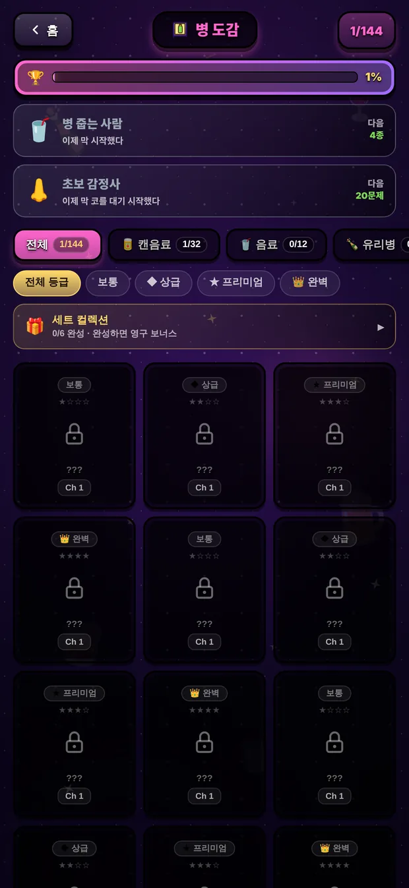
생산 라인 30개가 알아서 병을 만듭니다. 게임을 닫아둔 동안에도 계속 돌아가서, 다시 열면 그만큼 쌓여 있습니다.
라인을 새로 늘릴지 기존 라인을 올릴지, 저장 한도가 차기 전에 언제 수거하러 올지 — 출근길에 한 판, 저녁에 한 번 들르는 리듬으로 굴러갑니다.
가끔 병 소나기가 내립니다. 이슬비, 소나기, 폭우.
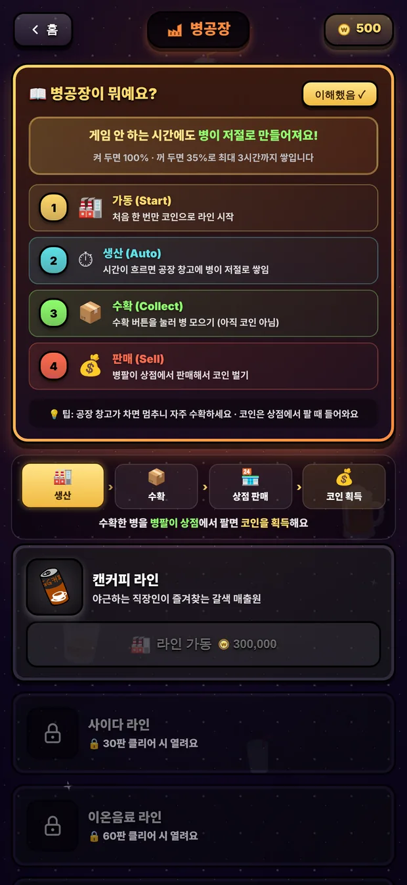
대전 모드에서 AI와 1대1로 겨룹니다. 이기면 승점이 쌓이고 티어가 오릅니다. 전체 순위와 대전 승점을 랭킹에서 한곳에 봅니다.
대전 티어는 다섯 단계입니다.
친구와 겨루는 실시간 대전은 준비 중입니다.
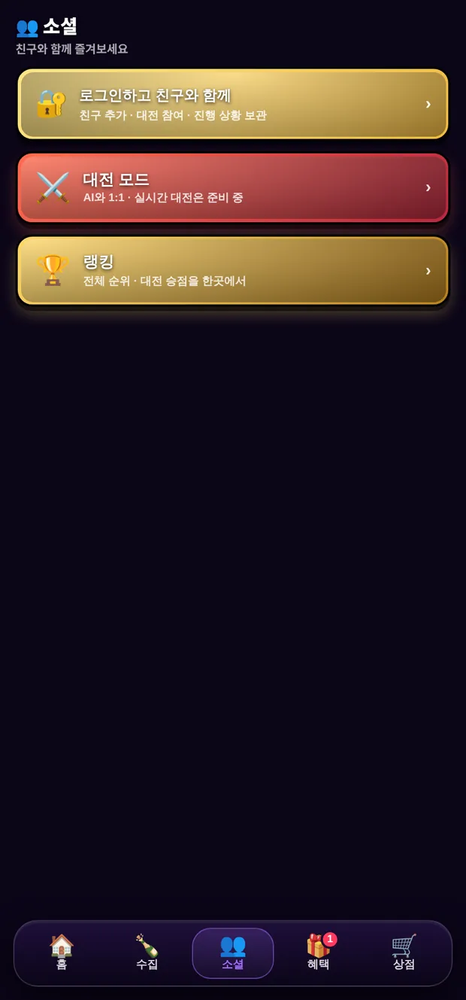
매일
하루에 세 판, 그날만 적용되는 규칙이 걸립니다. 규칙이 바뀌면 평소에 쓰던 수가 통하지 않습니다.
그날 인기 있는 병이 따로 있습니다. "오늘은 소주병이 인기예요", "고물상에서 위스키병을 찾고 있어요". 값이 평소와 달라지니, 쟁여둘지 지금 팔지 매일 판단이 바뀝니다.
가끔 하늘에서 병이 쏟아집니다. 이슬비, 소나기, 폭우 — 세기에 따라 떨어지는 양이 다릅니다.
사람들
무대마다 사람이 있습니다. 챕터가 열리면 그 동네 사람이 나와 한마디씩 합니다. 얼굴을 눌러 보세요.
골목 터줏대감
평생 이 골목을 지킨 어르신. 병 하나에도 사연이 있다며 훈수를 둔다.
어서 오세요! 오늘도 병 팔아 대박 나 봅시다!
사이사이 속담 퀴즈도 나옵니다. "가는 말이 고와야 …?"
장사
같은 병이라도 당신이 부르는 값이 다릅니다. 장사 실력을 올리면 모든 거래에 붙는 값이 함께 오릅니다. 다섯 단계를 지나는 동안 같은 병 하나가 처음과는 전혀 다른 돈이 됩니다.
끝까지
모은 병의 수가 쌓이면 호칭이 바뀝니다. 열여덟 단계를 지나는 동안 무대도 골목 슈퍼에서 전통시장, 유흥가, 호텔 라운지로 올라갑니다.
10년
병팔이는 2016년에 처음 나왔고, 그 뒤로 오래 조용했습니다. 2026년에 다시 열었습니다. 병을 줍는 그 캐릭터와 "버려진 병 하나로 부자가 된다"는 이야기는 그대로 두고, 나머지는 전부 새로 지었습니다.
앱스토어, 구글 플레이, 원스토어에 같은 날 열었습니다.
Joyce Studios · Bill Kim
어디까지 가나
백 판마다 세상이 통째로 바뀝니다. 골목 슈퍼에서 출발해 유흥가, 연구소, 캠핑장, 재즈 클럽, 증류소, 고대 유적, 오로라 관측소를 지나 마지막 병팔이 전당에 닿습니다. 병도 판 모양도 막아서는 것도 그때마다 달라집니다.
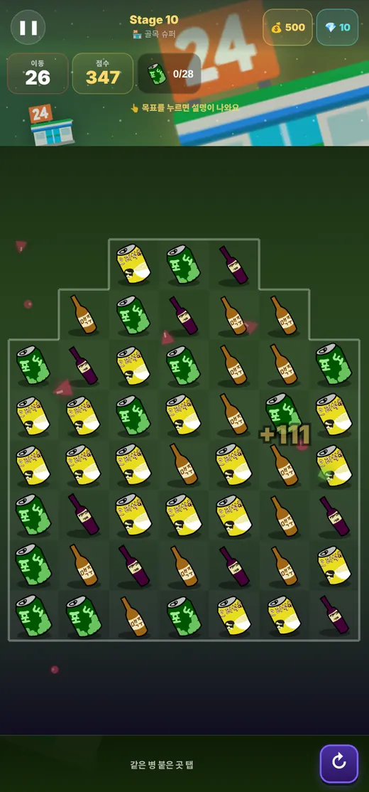
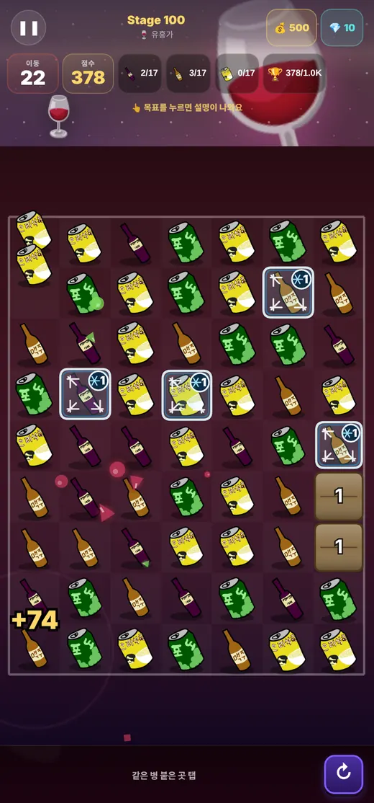
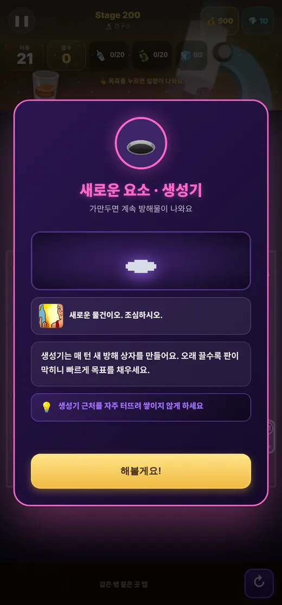
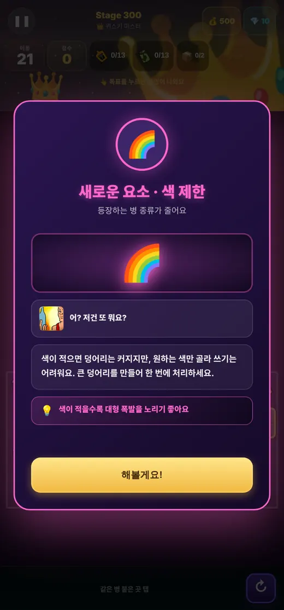
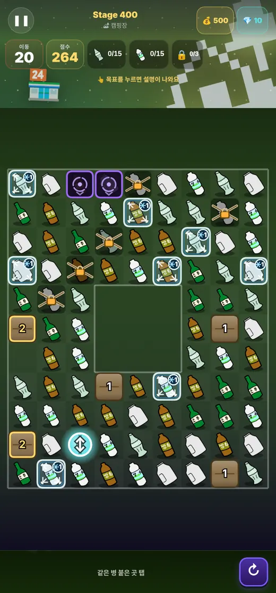
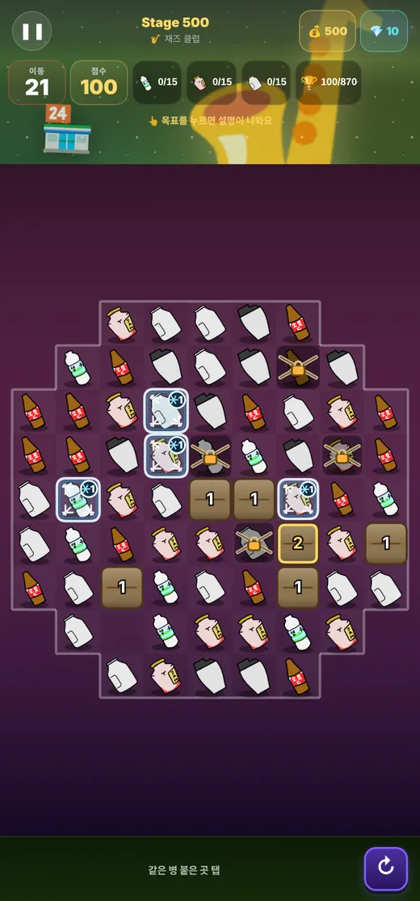
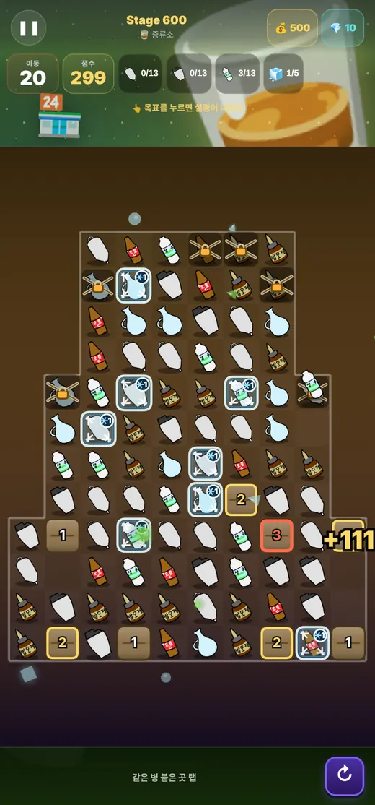
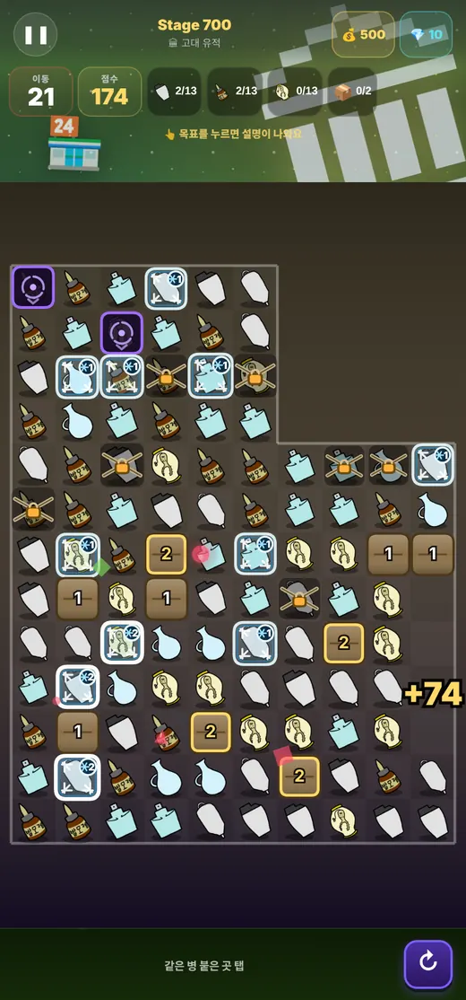
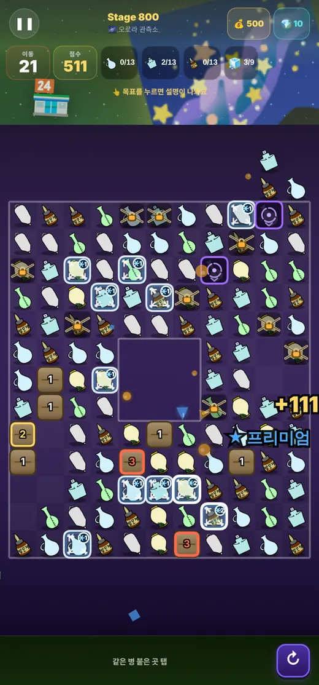
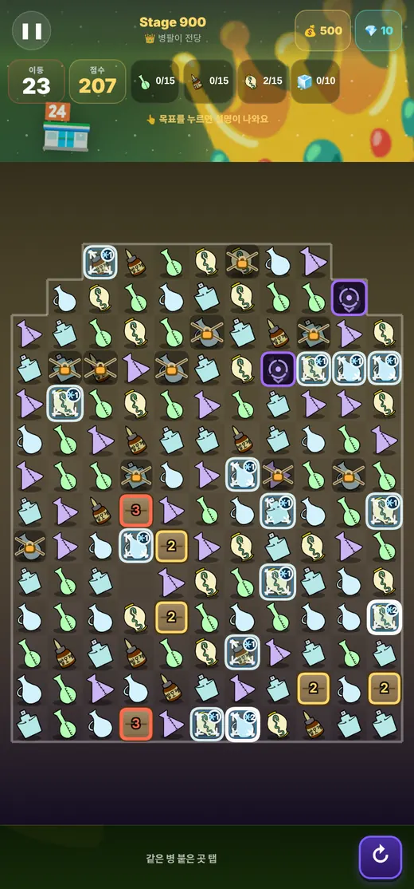
여기 열 장은 900판 중 열 판입니다. 사이사이에 890판이 더 있습니다.
지금 바로 시작해 보세요.